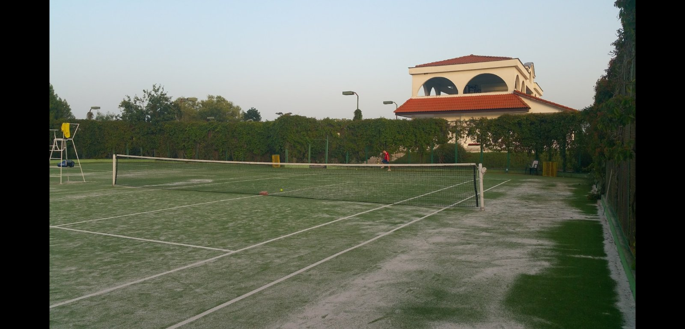

Sport:
- Am inceput tenisul de la 7 ani si am practicat 8 ani acest sport.Am fost la nenumarate competitii si am luat locuri de frunte insa am lasat acest sport la varsta de 15 ani deoarece am avut o stagnare de progres. ;Tenis.
Tenisul este un sport cu rachetă care poate fi jucat individual împotriva unui singur adversar (simplu) sau între două echipe a câte doi jucători (dublu). Fiecare jucător folosește o rachetă de tenis pentru a lovi o minge de cauciuc acoperită cu fetru peste sau în jurul unui fileu și în terenul adversarului. Obiectivul jocului este să manevreze mingea în așa fel încât adversarul să nu poată juca o întoarcere validă. Jucătorul care nu poate întoarce mingea nu va câștiga nici un punct, în timp ce jucătorul opus va câștiga.
-
Regulile principale:
Spre deosebire de majoritatea sporturilor, nu există campionate continentale sau mondiale de tenis, în schimb există competiții mai mari (turnee), cu o tradiție semnificativă în diferite țări. În competiții, în funcție de rezultatul obținut, concurenții vor primi premii în bani și puncte de clasament în funcție de categoria competiției. Turneele sunt deseori organizate după sex și numărul de jucători. Configurațiile obișnuite ale turneelor includ simplu masculin, simplu feminin și dublu. Turneele pot fi organizate pentru anumite grupe de vârstă, cu limite superioare de vârstă pentru jumiori și limite inferioare de vârstă pentru jucătorii seniori. Există, de asemenea, turnee pentru jucătorii cu dizabilități, cum ar fi tenis în scaunul cu rotile și tenis pentru surzi.În cele patru turnee de Grand Slam, tabloul principal la simplu este limitat la 128 de jucători pentru fiecare sex.
